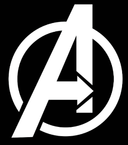

.
!
Assignment 3

vengers Headquarters

Name: Raja
Age: Unknown
Gender: Male
Location: Unknown
Brief Information: Unknown

Name: Iron Man
Age: 36
Gender: Male
Location: Stark Tower
Brief Information:
Without his suit of armor, Tony Stark has no supernatural powers. He is only limited by his imagination. Tony is a brilliant engineer and has used his talents to create a powerful suit of armor that enables the wearer to fly, shoot beams of energy from his hands and chest, and resist the vacuum of space. The suit also protects the wearer from damage and grants superhuman strength.
The suit is constantly being redesigned to face the new challenges that Tony Stark meets on a daily basis. There are specialty suits that have been made such as the Arctic, Stealth, Space, Hulkbuster, and Thorbuster armors. There have been nearly 40 different variations of the Iron Man armor even one called the God Slayer.

Name: Thor Odin Son
Age: 75
Gender: Male
Location: Asguard
Brief Information:
Thor Odinson is the Asgardian God of Thunder, the former king of Asgard and New Asgard, and a founding member of the Avengers. When his irresponsible and impetuous behavior reignited a conflict between Asgard and Jotunheim, Thor was denied the right to become king, stripped of his power, and banished to Earth by Odin. While exiled on Earth, Thor learned humility, finding love with Jane Foster, and helped save his new friends from the Destroyer sent by Loki. Due to his selfless act of sacrifice, Thor redeemed himself in his father's eyes and was granted his power once more, which he then used to defeat Loki's schemes of genocide.
He has since gone on to become a key member of the avengers since having crafted his strongest weapon to date ...Storm breaker!

Name: Groot
Age: Groot
Gender: Groot
Location: Groot
Brief Information:
Groot! Groot! Groot! Groot! Groot! Groot! Groot! Groot! Groot! Groot! Groot! Groot! Groot! Groot! Groot! Groot! Groot! Groot! Groot! Groot! Groot! Groot! Groot! Groot! Groot! Groot! Groot! Groot! Groot! Groot! Groot! Groot! Groot! Groot! Groot! Groot! Groot! Groot! Groot! Groot! Groot! Groot! Groot! Groot! Groot! Groot! Groot! Groot! Groot! Groot! Groot! Groot! Groot! Groot! Groot!

Name: Dr. Steven Strange
Age: 47
Gender: Male
Location: Sanctum Sanctorum
Brief Information:
Doctor Strange is a practicing magician who draws his powers from mystical entities such as Agamotto, Cyttorak, Ikonn, Oshtur, Raggadorr, and Watoomb, who lend their energies for spells. Strange also wields mystical artifacts including the Cloak of Levitation which enables him to fly; the Eye of Agamotto, an amulet whose light is used to negate evil magic; the Book of the Vishanti, a grimoire which contains vast knowledge of white magic; and the Orb of Agamotto, a crystal ball which is used for clairvoyance.
In addition to his magical abilities, Strange is trained in several martial arts disciplines, including judo, and has shown proficiency with numerous magically conjured weapons including swords and axes. Strange was a skilled neurosurgeon before nerve damage impaired his hands.
Doctor Strange is described as "the mightiest magician in the cosmos" and "more powerful by far than any of your fellow humanoids" by Eternity, the sentience of the Marvel Universe. He holds the title of Sorcerer Supreme beginning with the 1973 storyline in which the Ancient One dies, and retains the title thereafter, except during an interruption from 1992 to 1995. He relinquishes the title once again in a 2009 storyline, but reclaims it in a 2012 story when he proves himself willing to protect the world even without the title.